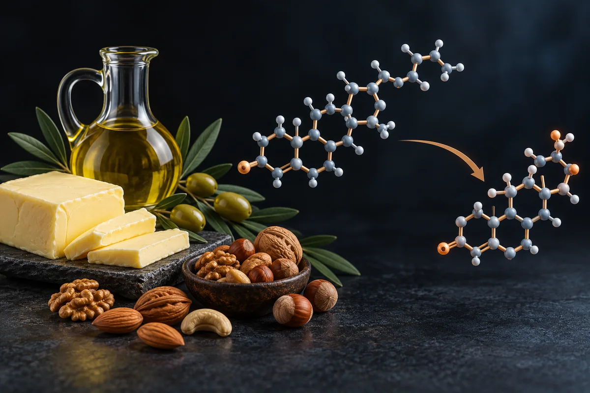

Gordura na dieta e testosterona (a "diretriz de 1977")
Em ensaios pequenos, dietas com 25% de gordura ou menos deixaram a testosterona 12% a 13% menor; o "21% em 1996" não está no estudo de 1996, e a meta de 1977 era 30% de gordura, não zero.

実験的資料。ここにあるものを使う前に読んでください。
このページにあるものは何一つ、医学的な推奨、処方、治療計画ではありません。 研究コミュニティに流通しているプロトコルと、存在する場合には公表された試験が検証した内容を、整理して翻訳したものです。この二つは異なる形で標示されており — 同等ではありません。
ここにある化合物の大部分はヒトへの使用についてFDAの承認を得ていません。多くは「研究用途限定」のラベルで販売されており、これは人が摂取するための純度、無菌性、含量の管理を経ていないことを意味します。コミュニティが記述する用量は検証された用量ではありません。誰かがそうしたと報告したものにすぎません。
これらの化合物のいずれかを検討する前に、資格を持つ医療専門家に相談してください。すでに使用していて予期しないことを感じたら、受診してください — 次の定期検査を待たないでください。
概要
Os vídeos dizem que uma diretriz de 1977 mandou cortar gordura, que isso cortou a "matéria-prima" da testosterona e que um estudo de 1996 mediu queda de 21%. O documento de 1977 existe: é um relatório de uma comissão do Senado americano que propôs baixar a gordura de cerca de 40% para cerca de 30% das calorias. O estudo de 1996 também existe, com 43 homens, e achou testosterona total 13% maior na dieta rica em gordura, sem significância estatística. Outro ensaio achou queda de 12%. Uma meta-análise de 6 estudos achou queda; outra, de 11 ensaios, não achou diferença. Nenhum estudo liga a diretriz à testosterona de uma geração.
このページが存在する理由
A gordura da dieta aparece descrita em vídeos curtos sobre saúde masculina que vi publicados na internet, como a vítima de um erro histórico. O roteiro: em 1977 uma "diretriz oficial" mandou cortar gordura e pôr mais fibra e carboidrato no prato; isso "virou dogma nacional"; o colesterol é a matéria-prima da testosterona, então cortar gordura faz o hormônio "desabar"; em 1996, pesquisadores puseram homens numa dieta pobre em gordura e rica em fibra e a testosterona caiu 21% em relação à dieta normal deles; "outros dois grupos" repetiram a mesma queda; e a dieta de corte com "frango seco, salada e zero azeite" estaria apagando o "pique" de quem a segue. A diretriz teria derrubado "a testosterona de gerações inteiras", e a correção teria saído num artigo "que quase ninguém leu".
Esta página trata de hábito, não de algo que se toma. Como na página sobre plásticos (ver a página bpa-ftalatos-plasticos), a tabela de doses deu lugar às dietas usadas nos estudos: quanto de gordura, por quanto tempo, em quem. O papel do açúcar e dos ultraprocessados na testosterona tem página própria (ver a página ultraprocessados-acucar-alcool), e a do excesso de gordura corporal também (ver a página gordura-corporal-penis-enterrado).
Levantei as alegações de 1 vídeo curto e conferi 12 delas. Li o documento de 1977 no original, na cópia digitalizada do Government Publishing Office americano. Nenhum número desta página veio da fonte secundária do site.
Este site trata de assunto vizinho também em Azeite de oliva extravirgem (oleuropeína).
O que foi a "diretriz de 1977", lida no original
O documento se chama Dietary Goals for the United States ("Metas alimentares para os Estados Unidos"). Não é uma lei nem uma diretriz de ministério: é um relatório da Comissão Especial de Nutrição e Necessidades Humanas do Senado americano, presidida pelo senador George McGovern. A primeira edição saiu em fevereiro de 1977 e a segunda, revisada, em dezembro de 1977. As Dietary Guidelines for Americans, as diretrizes oficiais do governo americano, só começaram em 1980 e são revistas a cada cinco anos, segundo a edição de 2015–2020.
O que a segunda edição pede, nas palavras dela:
- Gordura total: baixar de "aproximadamente 40%" para "cerca de 30%" das calorias.
- Gordura saturada: cerca de 10% das calorias, equilibrada com cerca de 10% de poli-insaturada e 10% de monoinsaturada.
- Colesterol da dieta: cerca de 300 mg por dia.
- Carboidrato: subir os carboidratos complexos e os açúcares "naturalmente presentes" de cerca de 28% para cerca de 48% das calorias. A primeira edição falava em 55–60% de carboidrato total; a segunda trocou o texto.
- Açúcar refinado: cortar em cerca de 45%, para cerca de 10% das calorias.
- Sal: cerca de 5 g por dia.
Três detalhes do próprio documento não aparecem nos vídeos. Primeiro, a meta era 30% de gordura, não "zero azeite". Segundo, a mesma página que pede menos gordura pede menos açúcar refinado. Terceiro, o relatório já dizia que o colesterol é "essencial para a função normal da célula, e um bloco de construção de hormônios". A matéria-prima não era segredo em 1977.
A história política do documento foi estudada por Oppenheimer e Benrubi (2014). Segundo eles, a comissão usou o consenso que existia entre epidemiologistas sobre dieta e doença do coração, a indústria da carne contestou nas audiências, e a segunda edição saiu com uma frase conciliadora sobre carne. Os autores atribuem a mudança à falta de consenso científico sobre como interpretar os dados, não só à pressão da indústria.
O mecanismo: o colesterol é matéria-prima, mas não vem só do prato
A frase "o colesterol é matéria-prima da testosterona" é verdadeira. Segundo a revisão de Hu e colegas (2010), os hormônios esteroides, entre eles a testosterona, são fabricados a partir do colesterol nas glândulas suprarrenais e nas gônadas. A mesma revisão diz de onde vem esse colesterol: da fabricação dentro da própria célula, das reservas de colesterol guardadas nela e do colesterol das lipoproteínas do sangue (LDL e HDL).
O salto que não se sustenta é o seguinte, "corta a matéria-prima e o hormônio desaba". As diretrizes americanas de 2015–2020 dizem que o corpo usa o colesterol para funções fisiológicas e estruturais "mas fabrica mais do que o suficiente para esses fins", e que por isso não é preciso obtê-lo da comida. O teste mais duro dessa ideia é a estatina, remédio que bloqueia a fabricação de colesterol no corpo. Numa meta-análise de ensaios controlados com placebo, em 5 ensaios com 501 homens, a estatina baixou a testosterona em −0,66 nmol/L (IC 95% −0,14 a −1,18) (Schooling 2013). Uma meta-análise de 2024 achou queda de 13,12 ng/dL nos ensaios randomizados e concluiu que ela não é suficiente para levar a testosterona abaixo do normal (Glina 2024). Se cortar a fabricação de colesterol com remédio produz uma queda pequena, é difícil sustentar que tirar gordura do prato faça o hormônio "desabar" por falta de matéria-prima.
Os próprios ensaios de dieta apontam outros caminhos. No estudo de Reed e colegas (1987), com 6 homens, a dieta pobre em gordura subiu a SHBG, a proteína que prende a testosterona no sangue, e baixou a fração livre. Os autores leram isso como regulação da SHBG pela gordura da dieta, não como falta de matéria-prima. Também há efeito no sentido contrário: numa refeição isolada, gordura poli-insaturada e monoinsaturada baixaram a testosterona por até 5 horas em homens com sobrepeso (Pearce 2019). A relação entre gordura e testosterona, portanto, não é uma linha reta de "mais gordura, mais hormônio".
実際にどれだけのエビデンスが存在するか
Os números abaixo foram levantados por mim em 16 de outubro de 2026, no PubMed e no ClinicalTrials.gov. A consulta de cada linha está ao lado do número, para qualquer pessoa repetir e me contradizer.
| 根拠 | 検索式 | 結果 |
|---|---|---|
| PubMed | ("Diet, Fat-Restricted"[MeSH Terms] OR "low-fat diet"[tiab] OR "low fat diet"[tiab]) AND testosterone | 54 artigos |
| PubMed | ("Diet, Fat-Restricted"[MeSH Terms] OR "low-fat diet"[tiab] OR "low fat diet"[tiab]) AND testosterone AND (Randomized Controlled Trial[Publication Type] OR Meta-Analysis[Publication Type]) | 16件の論文 |
| PubMed | "Dietary Fats"[MeSH Terms] AND testosterone AND (men OR male) AND humans[MeSH Terms] | 98 artigos |
| PubMed | "Dietary Fats"[MeSH Terms] AND testosterone AND (men OR male) AND humans[MeSH Terms] AND (Randomized Controlled Trial[Publication Type] OR Meta-Analysis[Publication Type]) | 19 artigos |
| PubMed | "dietary cholesterol"[tiab] AND testosterone[tiab] | 9 artigos |
| PubMed | statins AND testosterone AND (Meta-Analysis[Publication Type]) AND (men OR male) | 7 artigos |
| ClinicalTrials.gov | intervenção: low-fat diet | 1.282 estudos registrados |
| ClinicalTrials.gov | intervenção: low-fat diet, com o termo livre (query.term) testosterone | 23 estudos registrados |
この数字についての率直な読み方
- Dos 16 artigos marcados como ensaio randomizado ou meta-análise, só 1 ensaio testa dieta pobre em gordura em homens saudáveis com testosterona como desfecho. É o estudo de 1996 (Dorgan 1996). Os outros são as duas meta-análises, estudos em mulheres com ovário policístico ou câncer de mama, em meninas, em homens com câncer de próstata, em pessoas com obesidade em dieta para emagrecer e um de absorção de testosterona por via oral.
- O ensaio de 2005 que mais se parece com a alegação não recebeu a marca de ensaio randomizado. Ele comparou os mesmos homens antes e depois da troca de dieta, sem grupo controle (Wang 2005).
- Nenhum registro do ClinicalTrials.gov testa a pergunta dos vídeos. Os 23 registros com dieta pobre em gordura e testosterona são de ovário policístico, câncer de próstata ou de mama, emagrecimento, atletas e dieta cetogênica. Registro não é resultado.
- Contagem de artigo mede atenção acadêmica, não evidência de desfecho. A pergunta "dieta pobre em gordura baixa a testosterona?" foi testada em poucos ensaios, todos pequenos e curtos.
Os estudos que sustentam (ou não) as alegações
Segundo o PubMed, estes são os trabalhos concretos por trás do que se diz sobre gordura da dieta e testosterona.
| 研究 | N | 背景 | 報告された内容 | 注意点 |
|---|---|---|---|---|
| Dorgan et al., 1996 Am J Clin Nutr 64(6):850-5 · PMID 8942407 | 43 homens de 19 a 56 anos | Alimentação controlada, cruzado: 18,8% contra 41,0% das calorias em gordura, 10 semanas cada, peso mantido | Testosterona total 13% e a ligada à SHBG 15% maiores na dieta rica em gordura; diferença significativa só na fração ligada à SHBG (P = 0,04); testosterona na urina 13% maior (P = 0,01) | É o "estudo de 1996"; não há 21% no resumo; a comparação foi entre duas dietas controladas, não contra a dieta habitual |
| Wang et al., 2005 J Clin Endocrinol Metab 90(6):3550-9 · PMID 15741266 | 39 homens brancos de 50 a 60 anos | Dieta habitual rica em gordura e pobre em fibra, trocada por dieta pobre em gordura e rica em fibra com as mesmas calorias, 8 semanas | Testosterona caiu (P < 0,0001), com queda pequena da livre e da DHT; "redução consistente de 12%" dos andrógenos; peso −1 kg | Antes e depois, sem grupo controle; a composição exata das dietas não está no resumo |
| Hämäläinen et al., 1983 e 1984 J Steroid Biochem 18(3):369-70 · PMID 6298507; 20(1):459-64 · PMID 6538617 | 30 homens saudáveis (Finlândia) | Dieta habitual com 40% de gordura, trocada por 25% de gordura, mais poli-insaturada e mais fibra, 6 semanas | Testosterona total de 22,7 para 19,3 nmol/L (P < 0,001); livre também caiu; tudo voltou ao normal depois | Os dois artigos descrevem o mesmo grupo; mudaram quantidade e tipo de gordura e a fibra ao mesmo tempo |
| Reed et al., 1987 J Clin Endocrinol Metab 64(5):1083-5 · PMID 3558725 | 6 homens | Mais de 100 g de gordura por dia por 2 semanas, depois menos de 20 g por dia por 2 semanas | Na dieta pobre em gordura, colesterol caiu e SHBG subiu; a fração e a concentração de testosterona livre caíram | Muito pequeno; curto |
| Raben et al., 1992 Med Sci Sports Exerc 24(11):1290-7 · PMID 1435181 | 8 atletas de resistência | Dieta ovolactovegetariana contra mista rica em carne, cruzado, 6 semanas cada; gordura em 27% e 28% das calorias | Testosterona total menor na vegetariana (mediana 13,7 contra 17,4 nmol/L); livre sem diferença; desempenho sem diferença | A gordura era praticamente igual nas duas dietas: a diferença não pode ser atribuída à gordura |
| Whittaker e Wu, 2021 (meta-análise) J Steroid Biochem Mol Biol 210:105878 · PMID 33741447 | 206 (6 estudos) | Estudos de intervenção, dieta pobre contra rica em gordura, em homens | Testosterona total SMD −0,38 (IC 95% −0,75 a −0,01); livre −0,37; urinária −0,38; DHT −0,3; LH e SHBG sem diferença | Os autores pedem novos ensaios randomizados; há uma errata publicada em 2026 (PMID 41139558), que não li |
| Soltani et al., 2025 (meta-análise) J Food Sci 90(5):e70266 · PMID 40387562 | 888 (11 ensaios randomizados) | Adultos; dieta com até 30% de gordura contra dieta rica em gordura | Nenhuma diferença significativa em hormônios sexuais; testosterona com IC 95% de −14,48 a 13,50 | O resumo fala em adultos e não separa homens e mulheres; poucos estudos e certeza baixa, como os autores declaram |
| Fantus et al., 2020 J Urol 203(2):398-404 · PMID 31393814 | 3.128 homens | Pesquisa nacional de saúde americana (NHANES), transversal | Testosterona média 410,8 ng/dL na dieta pobre em gordura contra 443,5 na sem restrição; após ajustes, β −57,2 (IC −105,6 a −8,8) | Transversal; dieta mediterrânea também teve média menor; os autores chamam a diferença de modesta |
| Wynne-Ellis et al., 2024 Eur J Clin Nutr 78(2):99-106 · PMID 37891228 | 2.546 homens (Finlândia) | Transversal; tipo de gordura da dieta | Depois dos ajustes, o tipo de gordura não se associou de forma independente à testosterona | Transversal |
| Pearce e Tremellen, 2019 Nutrients 11(12):3059 · PMID 31847341 | homens com sobrepeso ou obesidade (piloto) | Refeições isoladas de cada nutriente, coleta por 5 horas | Gordura poli e monoinsaturada baixaram a testosterona por até 5 horas (−3,2 nmol/L em 1 h com a poli-insaturada) | Efeito agudo, depois de uma refeição; um dos autores declara participação em empresa de fertilidade e em suplemento de fertilidade masculina |
| Cangemi et al., 2010 Aging Cell 9(2):236-42 · PMID 20096034 | 24 homens em restrição calórica (contra 24 corredores e 24 sedentários) | Restrição calórica com nutrição adequada há 7,4 anos em média | Testosterona total e índice de andrógeno livre menores, SHBG maior no grupo da restrição, independentemente da gordura corporal | Transversal; restrição severa e longa, não dieta de corte de verão |
| Schooling et al., 2013 (meta-análise) BMC Med 11:57 · PMID 23448151 | 501 homens (5 ensaios) | Estatina contra placebo, homens de meia-idade com colesterol alto | Testosterona −0,66 nmol/L (IC 95% −0,14 a −1,18) | Testa a hipótese da "matéria-prima" pelo lado do remédio |
| Glina et al., 2024 (meta-análise) Int Braz J Urol 50(2):119-135 · PMID 38386784 | 6 ensaios, 10 coortes e 6 transversais | Estatina e testosterona em homens | Nos ensaios randomizados, −13,12 ng/dL (IC 1,16–25,08); a queda não levou a testosterona abaixo do normal | Mistura desenhos; os autores escrevem "não suficiente para causar queda abaixo da faixa normal" |
| Travison et al., 2007 J Clin Endocrinol Metab 92(1):196-202 · PMID 17062768 | 1.532 homens (Boston) | Coorte, 1987–2004 | Queda da testosterona na população, independente da idade, não explicada pelos fatores medidos (incluindo obesidade e tabagismo) | Os autores não atribuem a queda a dieta; não testaram a diretriz de 1977 |
As dietas testadas nos estudos
Isto não é recomendação: é o registro do que foi comido em estudos publicados, em quem e por quanto tempo. Fora do contexto do estudo, esses números não se transferem.
| 研究 | Dieta "pobre em gordura" | Dieta de comparação | 期間 | Em quem |
|---|---|---|---|---|
| Dorgan et al., 1996 | 18,8% das calorias em gordura; mais fibra; cerca de 3.170 kcal/dia, ajustadas para manter o peso | 41,0% das calorias em gordura | 10 semanas cada, cruzado | 43 homens saudáveis |
| Wang et al., 2005 | Pobre em gordura e rica em fibra, mesmas calorias (percentual não informado no resumo) | A dieta habitual de cada um | 8週間 | 39 homens de 50 a 60 anos |
| Hämäläinen et al., 1984 | 25% das calorias em gordura, relação poli-insaturada/saturada de 1,22 | 40% de gordura, relação de 0,15 (a habitual) | 6週間 | 30 homens saudáveis |
| Reed et al., 1987 | Menos de 20 g de gordura por dia | Mais de 100 g por dia | 2 semanas cada | 6 homens |
| Raben et al., 1992 | Ovolactovegetariana, 27% de gordura | Mista com carne, 28% de gordura | 6 semanas cada | 8 atletas de resistência |
| Dietary Goals, 1977 (meta, não estudo) | Cerca de 30% das calorias em gordura, 10% de saturada | Os cerca de 40% estimados para a dieta americana da época | — | População americana |
A comparação com a última linha mostra um ponto que os vídeos invertem: todos os braços "pobres em gordura" que baixaram a testosterona usaram 25% de gordura ou menos, abaixo da meta de 30% proposta em 1977.
Duas meta-análises, duas respostas
A meta-análise de Whittaker e Wu (2021), restrita a homens, juntou 6 estudos com 206 participantes e achou testosterona total menor nas dietas pobres em gordura, com diferença padronizada de −0,38. É um efeito pequeno a moderado, num conjunto pequeno de estudos curtos, e os próprios autores escrevem que "novos ensaios randomizados são necessários para confirmar" o efeito. No subgrupo de homens europeus e norte-americanos, o efeito foi maior (−0,52). Em 2026 a revista publicou uma errata desse artigo; não consegui ler o texto da errata e não sei o que ela corrige.
A meta-análise de Soltani e colegas (2025) juntou 11 ensaios randomizados com 888 adultos e não achou diferença significativa em nenhum hormônio sexual, testosterona incluída. Ela define dieta pobre em gordura como até 30% das calorias e, no resumo, fala em adultos sem separar homens e mulheres; vários ensaios com dieta pobre em gordura e testosterona medida foram feitos em mulheres, como mostra a contagem acima. As duas análises não estão medindo exatamente a mesma coisa.
O que as duas juntas permitem dizer: em homens, dietas com 25% de gordura ou menos baixaram a testosterona em ensaios pequenos, em torno de 12% a 13% nos dois ensaios que publicam o percentual; com uma definição mais larga de "pobre em gordura", e misturando homens e mulheres, o efeito some. Nenhuma das duas sustenta a palavra "desaba".
Das 12 alegações conferidas, 2 se confirmam, e nenhuma delas é o "21%"
Cada linha é uma alegação como ela circula, sem o nome de quem a fez. O veredito usa os rótulos confirmado, parcialmente, não sustentado, sem estudo em humanos, estudo em animal ou in vitro e número não encontrado na fonte citada.
| O que se diz | O que os estudos mostram | 結論 |
|---|---|---|
| Uma "diretriz oficial" de 1977 mandou cortar gordura e pôr mais fibra e carboidrato no prato, e isso virou dogma | O documento é um relatório de comissão do Senado americano (fevereiro e dezembro de 1977), não uma diretriz de governo; as diretrizes oficiais começaram em 1980. Ele pediu gordura de cerca de 40% para cerca de 30% das calorias, mais carboidrato complexo e menos açúcar refinado | Parcialmente |
| A dieta pobre em gordura baixa o colesterol | Em 6 homens, o colesterol caiu ao passar de mais de 100 g para menos de 20 g de gordura por dia (Reed 1987); reduzir gordura saturada reduz o colesterol do sangue (Hooper 2020) | Confirmado |
| O colesterol é matéria-prima da testosterona | Os esteroides são fabricados a partir do colesterol (Hu 2010); o próprio relatório de 1977 já o chamava de "bloco de construção de hormônios" | Confirmado |
| Cortou a matéria-prima, "o hormônio desaba" | O corpo fabrica colesterol "mais do que o suficiente" (diretrizes americanas 2015–2020); a estatina, que bloqueia essa fabricação, baixou a testosterona em −0,66 nmol/L (Schooling 2013), sem levá-la abaixo do normal (Glina 2024); nos ensaios de dieta, a queda foi de 12% a 13% e o mecanismo proposto envolve a SHBG (Reed 1987) | Não sustentado |
| Em 1996, uma dieta pobre em gordura e rica em fibra derrubou a testosterona em 21% "comparando com a dieta normal deles" | O estudo de 1996 comparou duas dietas controladas, não a dieta habitual; a testosterona total foi 13% maior na dieta rica em gordura, sem significância; 13% também na urina (Dorgan 1996) | Número não encontrado na fonte citada |
| "Outros dois grupos repetiram" a mesma queda | Em 2005, queda de 12% em 39 homens, sem grupo controle (Wang 2005); o grupo finlandês (22,7 para 19,3 nmol/L) é de antes de 1996 (Hämäläinen 1984); meta-análise de 6 estudos achou queda (Whittaker 2021), outra de 11 ensaios não achou (Soltani 2025) | Parcialmente |
| A queda vem "só de trocar a gordura por fibra" | Nos ensaios mudaram juntas a quantidade de gordura, o tipo de gordura e a fibra (Hämäläinen 1984; Dorgan 1996); com gordura igual (27% e 28%), a dieta vegetariana ainda teve testosterona total menor (Raben 1992) | Não sustentado |
| A dieta de corte com "frango seco, salada e zero azeite" vai apagando o pique | Nenhum estudo testou esse esquema; a restrição calórica longa baixou a testosterona independentemente da gordura corporal (Cangemi 2010); refeições de gordura baixaram a testosterona por horas (Pearce 2019) | Parcialmente |
| A diretriz de 1977 "pode ter derrubado a testosterona de gerações inteiras" | A queda populacional existe numa coorte de Boston, mas não foi explicada pelos fatores medidos e não foi atribuída a dieta (Travison 2007); nenhum estudo localizado liga a queda ao relatório de 1977; os braços que baixaram a testosterona usaram menos gordura que a meta de 1977 | Não sustentado |
| "Gordura entope artéria" era só o que se achava | Em ensaios de pelo menos 2 anos, reduzir gordura saturada reduziu eventos cardiovasculares combinados em 17% (RR 0,83; IC 0,70–0,98), com qualidade moderada pelo GRADE, como a revisão declara (Hooper 2020) | Não sustentado |
| A ciência sabe há 30 anos, a correção ficou num artigo que ninguém leu, e "a gente ainda tá comendo dentro do erro" | A recomendação oficial mudou: em 2015 os Estados Unidos retiraram o limite de 300 mg de colesterol; as diretrizes 2025–2030 listam carnes, ovos e laticínios integrais entre as gorduras saudáveis e aceitam manteiga e sebo, mantendo a saturada até 10% das calorias; o guia brasileiro de 2014 pede óleos e gorduras "em pequenas quantidades", não zero | Não sustentado |
| O protocolo completo aumentaria a testosterona "em até 147% em 28 dias" | Nenhuma fonte citada; nos ensaios de dieta localizados, as diferenças foram de 12% a 13% | Não sustentado |
Placar: 2 confirmadas, 3 parcialmente, 6 não sustentadas e 1 com número não encontrado na fonte citada.
Quem tem mais motivo para prestar atenção
- Quem faz dieta muito restrita por muito tempo. O que baixou a testosterona nos estudos foi gordura bem abaixo de 30% das calorias (Dorgan 1996; Hämäläinen 1984) e restrição calórica longa (Cangemi 2010). Uma dieta de corte com pouca comida e quase nenhuma gordura junta as duas coisas. A diferença medida foi pequena, e nenhum estudo localizado mediu "pique" ou disposição.
- Quem tem colesterol alto ou doença do coração. Reduzir gordura saturada diminuiu eventos cardiovasculares em ensaios longos (Hooper 2020). Trocar isso por gordura à vontade em nome da testosterona é trocar um efeito medido em eventos do coração por um efeito pequeno num exame.
- Quem usa estatina. A estatina baixa um pouco a testosterona, sem levá-la abaixo do normal (Schooling 2013; Glina 2024). Isso não é motivo para parar o remédio sem falar com o médico.
- Quem tem queixa de libido, ereção ou cansaço. Testosterona baixa tem causas que dieta não corrige. A perda de peso, em quem tem obesidade, é o que mais subiu a testosterona em meta-análise (ver a página ultraprocessados-acucar-alcool).
規制上のステータス
- Estados Unidos, diretriz atual: as Dietary Guidelines for Americans 2025–2030 (janeiro de 2026) dizem que gorduras saudáveis estão em carnes, aves, ovos, peixes, castanhas, sementes, laticínios integrais, azeitonas e abacate; sugerem azeite para cozinhar e aceitam manteiga ou sebo bovino; e mantêm que a gordura saturada "não deve passar de 10% das calorias diárias".
- Estados Unidos, colesterol: a edição 2015–2020 retirou o limite de 300 mg por dia de colesterol, que vinha desde a meta de 1977; a mesma edição traz a faixa de 20% a 35% das calorias em gordura para adultos.
- WADA: não se aplica.
この調査が行わなかったこと
- Li resumos, não os artigos inteiros, salvo o relatório de 1977 e as diretrizes americanas, que li no original.
- Não localizei a fonte do "21%". Não está no resumo do estudo de 1996 nem no de 2005. Pode estar numa tabela do artigo inteiro ou em outra publicação; não a achei.
- Não li a errata de 2026 da meta-análise de Whittaker e Wu; não sei se ela muda algum número citado aqui.
- Não conferi quantos homens havia na meta-análise de Soltani e colegas; o resumo não separa por sexo.
- Não verifiquei se a população americana de fato passou a comer menos gordura depois de 1977, nem quanto.
- Não verifiquei o orçamento de qualquer "campanha de 77"; o documento que localizei é um relatório de comissão.
- Não avaliei dieta cetogênica, ovos, óleo de coco ou outros alimentos específicos.
参考文献
- Dorgan JF, Judd JT, Longcope C, et al. Effects of dietary fat and fiber on plasma and urine androgens and estrogens in men: a controlled feeding study. Am J Clin Nutr. 1996;64(6):850-5. PMID 8942407 — o "estudo de 1996": 43 homens, 13%, sem o 21%.
- Wang C, Catlin DH, Starcevic B, et al. Low-fat high-fiber diet decreased serum and urine androgens in men. J Clin Endocrinol Metab. 2005;90(6):3550-9. PMID 15741266 — queda de 12% em 39 homens, sem grupo controle.
- Hämäläinen EK, Adlercreutz H, Puska P, et al. Decrease of serum total and free testosterone during a low-fat high-fibre diet. J Steroid Biochem. 1983;18(3):369-70. PMID 6298507 — o grupo finlandês, primeira publicação.
- Hämäläinen E, Adlercreutz H, Puska P, et al. Diet and serum sex hormones in healthy men. J Steroid Biochem. 1984;20(1):459-64. PMID 6538617 — 30 homens, 40% para 25% de gordura, testosterona de 22,7 para 19,3 nmol/L.
- Reed MJ, Cheng RW, Simmonds M, et al. Dietary lipids: an additional regulator of plasma levels of sex hormone binding globulin. J Clin Endocrinol Metab. 1987;64(5):1083-5. PMID 3558725 — SHBG sobe e testosterona livre cai na dieta pobre em gordura.
- Raben A, Kiens B, Richter EA, et al. Serum sex hormones and endurance performance after a lacto-ovo vegetarian and a mixed diet. Med Sci Sports Exerc. 1992;24(11):1290-7. PMID 1435181 — testosterona menor com a mesma gordura.
- Whittaker J, Wu K. Low-fat diets and testosterone in men: Systematic review and meta-analysis of intervention studies. J Steroid Biochem Mol Biol. 2021;210:105878. PMID 33741447 — meta-análise em homens: queda pequena a moderada.
- Whittaker J, Wu K. Corrigendum to "Low-fat diets and testosterone in men: Systematic review and meta-analysis of intervention studies". J Steroid Biochem Mol Biol. 2026;255:106880. PMID 41139558 — a errata de 2026, não lida.
- Soltani S, Hejazi M, Meshkini F, et al. The Effect of Low-Fat Diets Versus High-Fat Diet on Sex Hormones: A Systematic Review and Meta-Analysis of Randomized Controlled Trials. J Food Sci. 2025;90(5):e70266. PMID 40387562 — 11 ensaios, sem diferença.
- Fantus RJ, Halpern JA, Chang C, et al. The Association between Popular Diets and Serum Testosterone among Men in the United States. J Urol. 2020;203(2):398-404. PMID 31393814 — 3.128 homens, testosterona menor na dieta pobre em gordura.
- Wynne-Ellis MM, Mursu JJ, Tuomainen TP, et al. Dietary fat quality and serum androgen concentrations in middle-aged men. Eur J Clin Nutr. 2024;78(2):99-106. PMID 37891228 — o tipo de gordura não se associou de forma independente.
- Pearce KL, Tremellen K. The Effect of Macronutrients on Reproductive Hormones in Overweight and Obese Men: A Pilot Study. Nutrients. 2019;11(12):3059. PMID 31847341 — refeição de gordura baixa a testosterona por horas.
- Cangemi R, Friedmann AJ, Holloszy JO, et al. Long-term effects of calorie restriction on serum sex-hormone concentrations in men. Aging Cell. 2010;9(2):236-42. PMID 20096034 — restrição calórica longa baixa a testosterona.
- Hu J, Zhang Z, Shen WJ, et al. Cellular cholesterol delivery, intracellular processing and utilization for biosynthesis of steroid hormones. Nutr Metab (Lond). 2010;7:47. PMID 20515451 — de onde vem o colesterol usado para fabricar esteroides.
- Schooling CM, Au Yeung SL, Freeman G, et al. The effect of statins on testosterone in men and women, a systematic review and meta-analysis of randomized controlled trials. BMC Med. 2013;11:57. PMID 23448151 — estatina: −0,66 nmol/L em homens.
- Glina FPA, Lopes L, E Silva RS, et al. Do statins decrease testosterone in men? Systematic review and meta-analysis. Int Braz J Urol. 2024;50(2):119-135. PMID 38386784 — queda sem sair da faixa normal.
- Travison TG, Araujo AB, O'Donnell AB, et al. A population-level decline in serum testosterone levels in American men. J Clin Endocrinol Metab. 2007;92(1):196-202. PMID 17062768 — queda populacional sem causa identificada.
- Hooper L, Martin N, Jimoh OF, et al. Reduction in saturated fat intake for cardiovascular disease. Cochrane Database Syst Rev. 2020;8(8):CD011737. PMID 32827219 — menos gordura saturada, 17% menos eventos cardiovasculares.
- Oppenheimer GM, Benrubi ID. McGovern's Senate Select Committee on Nutrition and Human Needs versus the meat industry on the diet-heart question (1976-1977). Am J Public Health. 2014;104(1):59-69. PMID 24228658 — a história das duas edições de 1977.
- Select Committee on Nutrition and Human Needs, United States Senate. Dietary Goals for the United States, Second Edition. Dezembro de 1977 (cópia digitalizada no GovInfo; não indexado no PubMed) — as metas de 30% de gordura, 10% de saturada e 300 mg de colesterol, e o colesterol como "bloco de construção de hormônios".
- U.S. Department of Health and Human Services e U.S. Department of Agriculture. 2015–2020 Dietary Guidelines for Americans, 8ª edição (não indexado no PubMed) — retirada do limite de 300 mg de colesterol; "o corpo fabrica mais do que o suficiente".
- Dietary Guidelines for Americans, 2025–2030, janeiro de 2026 (não indexado no PubMed) — gorduras saudáveis, laticínio integral, saturada até 10% das calorias.
- Guia alimentar para a população brasileira, Ministério da Saúde, 2ª edição, 2014 — óleos e gorduras "em pequenas quantidades".
- PubMedのE-utilities（esearch） — このページのすべての論文件数の基礎。
- API pública do ClinicalTrials.gov, versão 2 — a base de todas as contagens de estudo desta página.